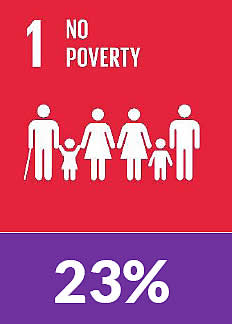
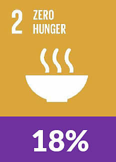
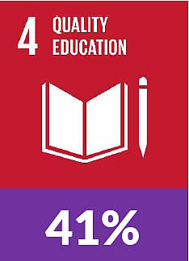
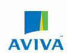
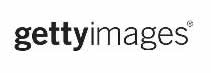
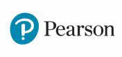
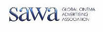
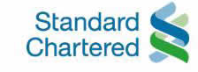
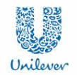

Road To 2020
1. What is driving you to continue in AIESEC? Why have you decided to stand for member of AIESEC International? What do you want to take out of this experience?
For every SDG there is a partner and initiative assigned to it. This way everyone is taking ownership of the situation at hand. Below are the top three issues currently facing the Millennials:



Here are the Founding Partners for the global goals:






Some of this companies have interacted with AIESEC previously, also for the fact that we are all fighting for the same course, this potential partners will be very beneficial to the implementation of YS Projects and the organization at large. Find out more about the Partnerships for the goals here: http://www.globalgoals.org/partners/
IN ADDITION++ United Nations Development Program (UNDP) will be a great contributor to the empowerment of young people as a global support partner as regards the implementation of YS Projects.
+ We can also have TN Takers that will be serviced in a Global Level such as USAID, Model United Nations – They will help us to increase the credibility of our projects by issuing certificate with the UN seal.
Possible Threats
1. The only threat that is very glaring as regards the partnership with the UN is the “My World Global Survey”. In my opinion it is a threat because it is shorter than the YS Survey and at the end of day it has the same issues highlighted in it. Currently the survey stands at over 7.5 million responses, this goes to say that it is bound to gain more credibility than the YS Survey
2. This may be a threat or opportunity depends on how it’s viewed. THE MODEL UNITED NATIONS, if we fail as an organization to capitalize on the UN partnership and work hand in hand with the MUN they may go back to being our competitive other in all universities around the world.
What is your understanding of the evolution of Youth Speak in the past years? What potential do you see in the Youth Speak strategy for AIESEC? Evaluate the success of the project in 2015.
Birthed by the 2011/2012 AIESEC International Team HERE. It’s likely that the initiative was not a focus for the next two to three years until the AIESEC International 2014/2015 came along and kicked it off on a global level. The YouthSpeak 1.0 Project has grown tremendously from slightly over 42,000 Responses in 2014/2015 to over 70,000 Responses and counting for the 2015/2016 semester. In 2015, the awareness grew a lot higher and also the fact that the United Nations supported the movement and that the SDGs are embedded in the survey gave it a lot of credibility. Another thing that contributed to the success in 2015 is the availability of insights and reports from 2014.

YOUTHSPEAK 1.0 at a glance |
YOUTHSPEAK 2.0 at a glance |
From the MY WORLD GLOBAL SURVEY – 2.9m of the 7.6m respondents speak up A GOOD EDUCATION |
AIESEC has become a multi-sided platform organization, taking in consideration the 2020 context answer: how will our platforms contribute to the statements of AIESEC 2020?
My proposition for the multisided platform is the:
EXPAYSOFOP [GIS Revolution]
Looking back into 2015, we see that BIG AIESEC online came in a lot late into the midterm ambition for 2015. What if we revolutionize our systems NOW! For us to do this we NEED TO EXPAND THE GIS to accommodate all platforms that will contribute towards the achievement of 2020.
What is EXPAYSOFOP? This is an acronym that translate into experience.aiesec.org, YouthSpeak Portal, Opportunity Finder (AIESEC World 2.0) and Opportunity Portal. Before we go deep into the 2020 context my burning desire is for us as an organization to up our conversion rate. This is the way forward:
EXPAYSOFOP [GIS Revolution]
Looking back into 2015, we see that BIG AIESEC online came in a lot late into the midterm ambition for 2015. What if we revolutionize our systems NOW! For us to do this we NEED TO EXPAND THE GIS to accommodate all platforms that will contribute towards the achievement of 2020.
What is EXPAYSOFOP? This is an acronym that translate into experience.aiesec.org, YouthSpeak Portal, Opportunity Finder (AIESEC World 2.0) and Opportunity Portal. Before we go deep into the 2020 context my burning desire is for us as an organization to up our conversion rate. This is the way forward:
YouthSpeak Portal |
Opportunity Finder |
NPS Reloaded |